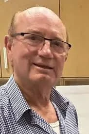

כפר עזה
רייכנשטיין הכהן אליקו ז"ל
ספורטאי, רוכב אופניים, אמן ומטפח הבוסתן
סיפור חיים
אליקו רייכנשטיין הכהן ז״ל נולד בשנת 1948 וגדל בקריית מוצקין. הוא היה הבכור במשפחה של ניצולי שואה, ג׳ינג׳י עם צחוק מתגלגל, אדם שהותיר חותם בלבבות רבים.
את חניתה הכיר אליקו במסגרת גרעין הנח״ל, ובשנת 1970 נישאו השניים. בשנת 1976 עברו להתגורר בקיבוץ כפר עזה, ושם בנו את ביתם וגידלו יחד את ארבעת ילדיהם.
אליקו היה ידען, ספורטאי ואמן בנשמתו. הוא היה צלם מוכשר, עסק בפיסול, ציור ועבודה עם עיסת נייר, ולמד גם לפסל בנייר. בשנותיו האחרונות אף שכר חדר בקיבוץ כפר עזה, שבו תכנן להמשיך ליצור עם יציאתו לפנסיה.
במשך שנים רבות עבד אליקו במפעל ״כפרית״ שבקיבוץ. לצד עבודתו היה איש של עשייה, יצירה וקהילה, אדם סקרן ובעל ידיים טובות, שתמיד מצא דרך לבנות, לטפח, ללמוד וליצור.
אחד מתחביביו הגדולים היה רכיבה על אופניים. הוא היה שותף, יחד עם חבריו לרכיבה, בסימון שביל האופניים ביער אסף שמחוני, והיה מחובר מאוד למרחב, לטבע ולתנועה.
בשנותיו האחרונות היה אליקו פעיל מאוד בצוות הבוסתן של כפר עזה, והיה בין המייסדים שהקימו אותו. הוא דאג לטפח את הבוסתן, והשקיע בו מאהבתו לאדמה, לצמחייה ולקהילה. כך המשיך להשפיע ולתרום לחיי הקיבוץ עד יומו האחרון.
שבעה באוקטובר והימים שאחריו בבוקר שבת, שמחת תורה תשפ״ד, 7 באוקטובר 2023, חדרו מחבלים לקיבוץ כפר עזה במסגרת מתקפת הטרור הרצחנית על יישובי עוטף עזה.
אליקו נרצח על ידי מחבלים בביתו שבכפר עזה בכ״ב בתשרי תשפ״ד, 7 באוקטובר 2023. בן 75 היה במותו.
הוא הובא למנוחות בבית העלמין בקריית טבעון, והותיר אחריו את רעייתו חניתה, ארבעה ילדים, נכדים ונכדות ואחות.
זיכרון ומילים מהלב רותם קראוס סיפר על אליקו כאדם ידען, יצירתי, ספורטאי ואמן; אדם עם צחוק מתגלגל, שהשאיר אחריו זיכרון של חום, נוכחות ויצירה.
אליקו נזכר כאיש של קהילה, טבע ואמנות. מי שטיפח את הבוסתן, יצר בידיו, צילם, פיסל, רכב, למד וחי בסקרנות מתמדת. הוא ידע לחבר בין אדמה, אנשים ויצירה, ולהשאיר אחריו מקום קצת יותר יפה, חי ומלא משמעות.
זכרו נשאר בלב משפחתו, חבריו, קהילת כפר עזה וכל מי שזכה להכיר אותו.